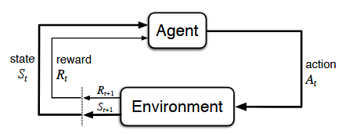

by Veronica Scerra
A ground-up exploration of Reinforcement Learning methods and models.
Reinforcement learning is the science of learning to make decisions, or conversely, teaching machines to make decisions based on environmental variables. In our discussion of k-armed bandits, I introduced the idea of actions - multiple actions that can be taken in a situation, but the model in that situation is one of actions and rewards. This brings us to Markov Decision Processes (MDPs), which formalize the problem with a full sequential structure. If we assume that the environment is fully observable, and we also assume that the current observation contains all of the relevant information for understanding our state and options, then we can create a model of best choices in our current state for maximum reward. In an MDP, actions not only influence immediate rewards, but also future rewards through subsequent situations and states, all of which are, or can be, known. In the bandit problem, we estimated the value of each action taken, in MDPs, we extend that to estimate the value of each action in each state, or we estimate the value of each state given optimal action selections. In the model for a MDP, the learner or decision maker is called the agent, and the things the agent interacts with are the environment.
The key elements that comprise an MDP model are as follows:
Typical Formulation:
\[ G_{t} = R_{t+1} + γR_{t+2} + γ^{2}R_{t+3} + … = \sum_{k=0}^{∞} γ^{k} R_{t+k+1} \]
Where t represents the time step and γ is the discount factorAt each timestep \(t\)
In a finite MDP, the sets of states, actions, and rewards all have a finite number of elements (as opposed to infinite…)
Depiction of the agent-environment interactions in a MDP, borrowed from Sutton & Barto (2018)
To what end are we specifying all of these key players and parameterizing the learning system? What does all of this accomplish?
Goals: In an MDP, the agent’s goal is to find a way to act (a policy) that maximizes cumulative reward over time. Crucially, the goal isn’t to get the biggest reward at one time step, but rather to develop a reliable strategy for maximizing total expected reward over time. This is a long-term goal that incorporates discount factors for distal vs. proximal rewards, many time steps, and reliable reward expectations.
Specifying rewards carefully is crucial to developing a winning strategy for maximizing reward. For example, if you were teaching an agent to navigate a maze, you would give positive rewards for reaching the end and penalize time spent in the maze to encourage the agent to complete the maze as quickly as possible. If you wanted a robot to learn how to walk, you would positively reward forward motion, and negatively reward stumbles, falls, and instability - the machine would soon learn to stabilize and move forward to avoid the negative rewards and maximize the returns for the episode of walking. In these instances, in this problem formulation for reinforcement learning, the “purpose” or “goal” can be thought of as the maximization of the expected value of a cumulative return value, also called reward.
Policy: The policy adopted by an agent answers the question “What should I do to maximize reward?” What I personally find fascinating about reinforcement learning is that it really is just a formalization of what humans (and all animals) do naturally. You observe patterns, you formulate a plan for getting the most reward (often, you don’t even do it consciously), and you continually evaluate your returns and adjust your approach. That plan you formulate for getting the best coffee by standardizing your order, finding the best grocery store by evaluating the pros and cons of getting there/selection/prices/ convenience, or choosing which of your neighbors you like best are all examples of adopting a policy for maximizing returns. Our determination of “good” actions to take is usually based on our expected reward policy.
Formally, policy is a mapping from states to probabilities of selecting each possible action. The ultimate goal of reinforcement learning is to find the optimal policy, denoted \(π^{*}\). The policy is defined to answer the question - “Given that I’m in state , what action should I take?” Policies can come in two flavors: deterministic and stochastic.
Value Function: The value function is the formalization assigning expected return to states and actions. It answers the question - “How good is this action/state?” in the context of possibilities available. Value functions can be assigned to both states and actions as follows:
"Given the state \(s\), the expected reward will be the following, assuming we take the subsequent actions dictated under our policy \(π\)" \[ V^{\pi}(s) = \mathbb{E}_{\pi} \left[ \sum_{t=0}^{\infty} \gamma^t R_{t+1} \,\middle|\, S_0 = s \right] \]
"Given the state \(s\) and action \(a\), the expected reward will be the following, assuming we take the subsequent actions dictated under our policy \(π\)" \[ Q^{\pi}(s, a) = \mathbb{E}_{\pi} \left[ \sum_{t=0}^{\infty} \gamma^t R_{t+1} \,\middle|\, S_0 = s, A_0 = a \right] \]
Once your value functions are specified, it is simple work to select the best action/state combination for your policy to maximize returns
The truly cool thing about a finite MDP is that all of the actions, states, and rewards can be known, so that in any situation a policy and value functions can be specified and the best path forward to maximize reward can be chosen. Next post will address the Bellman Equation, which ties all of the elements together mathematically.
The notebook that corresponds with this post (found here) illustrates:
This work lays the foundation for more complex reinforcement learning problems like multi-step decision making, function approximation, and dynamic environments.
Now that we understand the elements contributing to MDPs, I plan to expand this series into:
This ongoing series project aims to demystify reinforcement learning concepts through hands-on code, clear explanations, and visualizations. Learn with me!